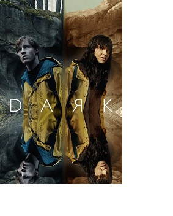

??????
Wednessday
 “Wednesday” es un spin-off de “Los locos Addams” y se presenta como una comedia de misterio sobrenatural.
“Wednesday” es un spin-off de “Los locos Addams” y se presenta como una comedia de misterio sobrenatural.
La serie se centra en el personaje de Merlina Adams, durante su estancia en la Academia Nunca Más (Nevermore).
Nuestra protagonista es descrita como “inteligente, sarcástica y un poco muerta por dentro”.
En ese sentido, buscará desarrollar sus habilidades psíquicas, así como resolver un misterio que envolvió a sus padres hace 25 años atrás.
Todo esto mientras frustra una ola de asesinatos y hace nuevos amigos (y enemigos) en la escuela.
Articulos relacionados
 |
 |
 |
| Stranger Things |
Dark |
Lupin |